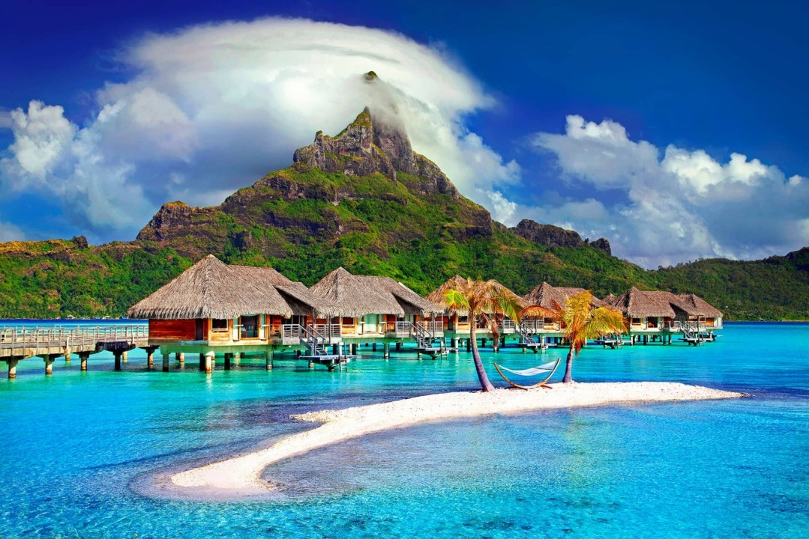
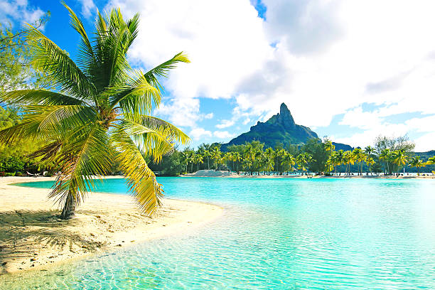

My Dream Destantion
Today I will tell you about my dream destanation which is Bora Bora! Bora Bora is a great place for families to go to. It is a luxry spot.
Some fun facts about Bora Bora:
1. Bora Bora was formed by volcanic activity
2. The island was a haven for pirates back in the days
3. Bora Bora is a popular luxry travel destantion


Want to fly to Bora Bora?
Flights to Bora Bora
Things to do in Bora Bora
Hotels in Bora Bora
Restaurants in Bora Bora
Airpots in Bora Bora
Car rentals in Bora Bora